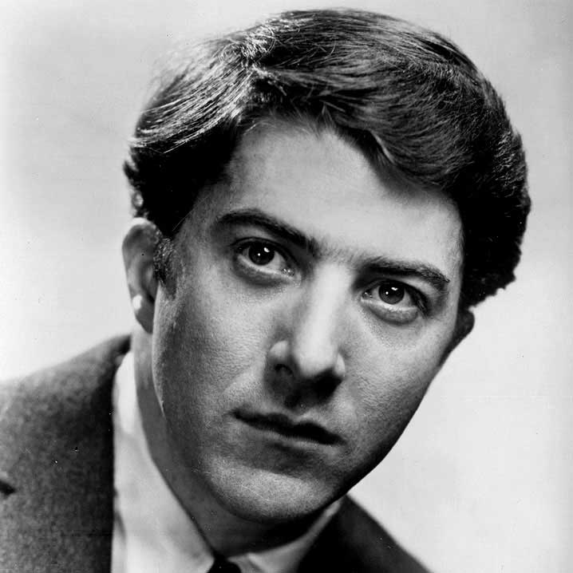

He has appeared in more than 100 films and television shows, including The Deer Hunter, Annie Hall, The Prophecy trilogy, The Dogs of War ...
Sean Penn
Mystic River
He has won two Academy Awards, for his roles in the mystery drama Mystic River (2003) and the biopic Milk (2008). Penn began his acting career in television with a brief appearance in a 1974 episode of Little House on the Prairie ...
Clint Eastwood
Million Dollar Baby
He rose to international fame with his role as the Man with No Name in Sergio Leone's Dollars trilogy of spaghetti Westerns during the 1960s ...
Dustin Hoffman
Kramer vs. Kramer

He has been known for his versatile portrayals of antiheroes and vulnerable characters.[3] He won the Academy Award for Kramer vs. Kramer in 1979 ...
Edward Norton
American History X
He has been nominated for three Academy Awards for his work in the films Primal Fear, American History X and Birdman. He also starred in other roles ...
Michael Caine
Educated Rita
English actor and author. Renowned for his distinctive working class cockney accent, Caine has appeared in over 115 films and is regarded as a British ...
Michael Caine
Educated Rita
English actor and author. Renowned for his distinctive working class cockney accent, Caine has appeared in over 115 films and is regarded as a British ...